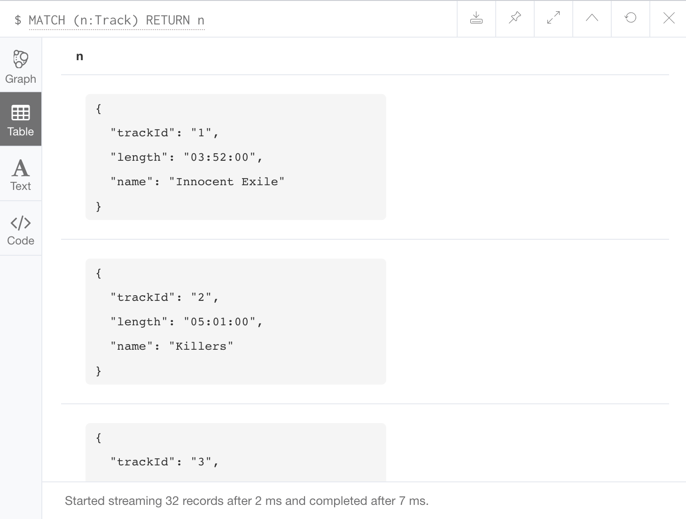

你可以将 CSV 文件中的数据导入到 Neo4j 数据库中，为此我们来学习下 Cypher 中的
LOAD CSV语句。
将 CSV 文件导入到 Neo4j 的能力，可以实现从其他类型的数据库来导入数据（比如关系型数据库）。
在 Neo4j 中，你可以通过本地或远端 URL 来加载 CSV 文件。
要访问本地（在数据库服务器上）文件，使用 file:/// 路径。除此之外，可以使用任何 HTTPS，HTTP 和 FTP 协议。
读取 CSV 文件
我们使用 HTTP 协议加载一个名为 genres.csv 的 CSV 文件。它不是一个大文件，这个列表里包含了 115 个音乐流派，所以它将创建 115 个节点（和 230 个属性）。
这个文件上传到了开放的网络中，所以你可以在你的 Neo4j 浏览器中运行下边的代码，它可以直接导入到你的数据库中。
1 | LOAD CSV FROM 'https://jpanj.com/2018/neo4j-tutorial-import-data-from-csv-file-using-cypher/genres.csv' AS line |
你也可以忽略 CSV 文件中的某些字段，比如，如果你不希望将第一个字段导入到数据库中，可以从上边的代码中省略
genreId: line[0],。
运行上边的 Cypher 语句会产生以下成功消息：
你可以通过以下查询来查看刚刚新创建的节点：
1 | MATCH (n:Genre) RETURN n |
下边是通过数据可视化界面看到的节点结果：
导入包含标题的 CSV 文件
之前的 CSV 文件不包含任何标题，如果 CSV 文件包含标题，可以使用 WITH HEADERS。
使用这个方法还允许你通过它的列名（标题名）来引用每个字段。
我们有另一个带标题的 CSV 文件，该文件包含专辑曲目列表。
同样，这个文件不大，列表中包含了 32 个专辑，所以它将创建 32 个节点（和 96 个属性）。
这个文件也上传到了开放的网络中，所以你可以在你的 Neo4j 浏览器中运行下边的代码，它可以直接导入到你的数据库中。
1 | LOAD CSV WITH HEADERS FROM 'https://jpanj.com/2018/neo4j-tutorial-import-data-from-csv-file-using-cypher/tracks.csv' AS line |
这将产生下边的成功消息：
下边的查询语句可以查看新创建的节点：
1 | MATCH (n:Track) RETURN n |
同样我们通过可视化框架看到的节点的结果。
点击 Table 图标可以看到每个点和它的三个属性值：

自定义分隔符
如果需要的话你可以指定自定义字段分隔符，假如 CSV 文件中的分隔符是分号的话，你可以指定使用分号作为分隔符而不是逗号。
只需将 FIELDTERMINATOR 子句添加到语句中就可以做到了，像下边这样：
1 | LOAD CSV WITH HEADERS FROM 'https://jpanj.com/2018/neo4j-tutorial-import-data-from-csv-file-using-cypher/tracks.csv' AS line |
导入大文件
如果你需要导入包含大量数据的文件，可以使用 PERODIC COMMIT 来处理。
在 Neo4j 中使用定期提交功能可以在导入一定数量的行之后提交一次数据，这减少了事务状态的内存开销。
默认是 1000 行，所以数据会每 1000 行提交一次。
要使用定期提交，只需在语句开头插入 USING PERIODIC COMMIT （在 LOAD CSV 之前）。
下边有个例子：
1 | USING PERIODIC COMMIT |
设置定期提交频率
你还可以将 1000 行的默认值更改为另一个数字，只需将数字加在 USING PERIODIC COMMIT 后边就行了，就像这样：
1 | USING PERIODIC COMMIT 800 |
CSV 的格式要求
以下是使用 LOAD CSV 时应该如何格式化 CSV 文件的一些要求：
- 字符编码必须是 UTF-8
- 行终止标识和系统有关，例如在 Unix 中是
\n，在 Windows 上是\r\n - 分隔符必须是逗号，除非用通过
FIELDTERMINATOR特殊指定 - 如果字符串是用双引号引起来的，数据读入后会将双引号去掉
- 任何需要转义的字符都可以通过反斜线
\来转义